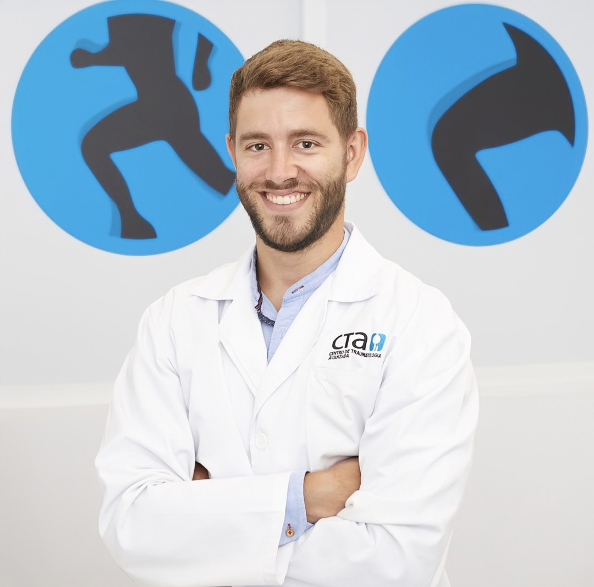
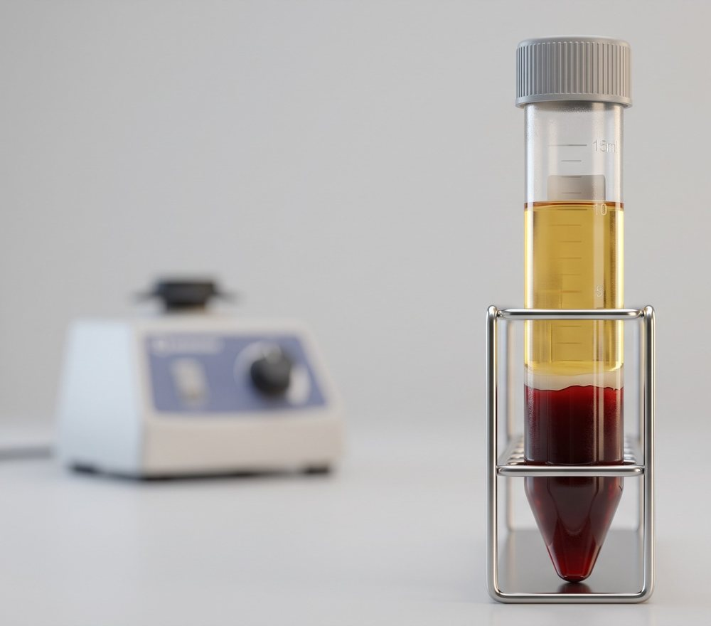
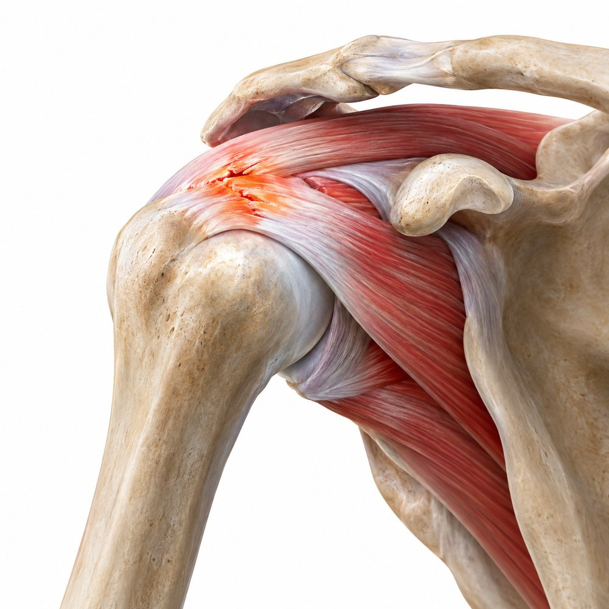
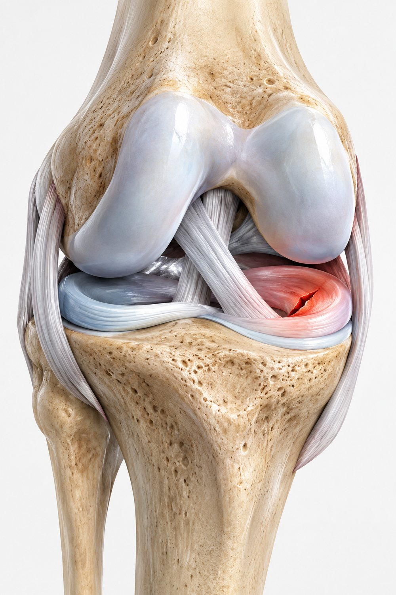
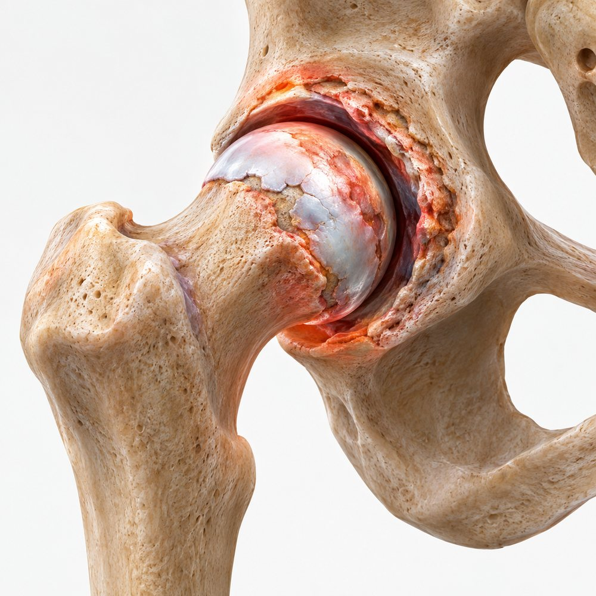
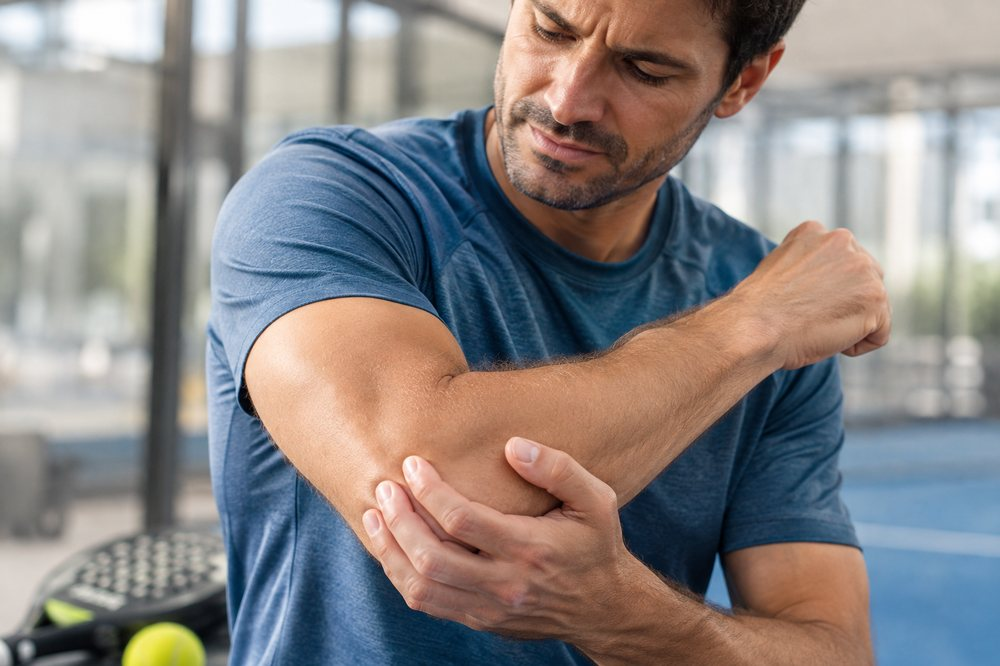
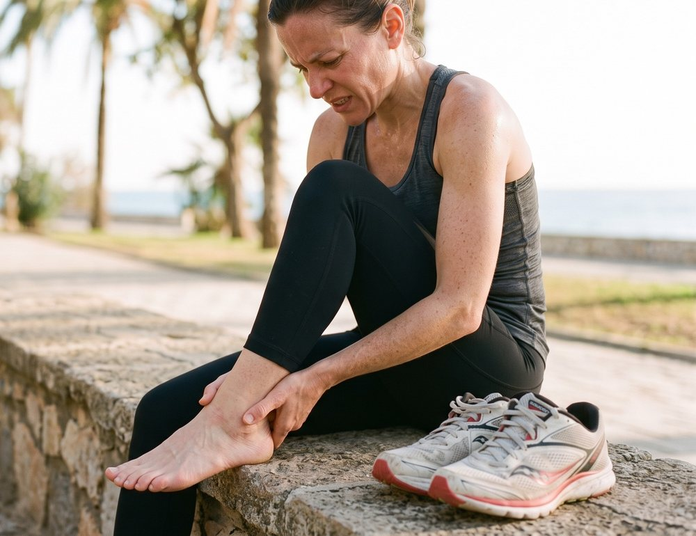
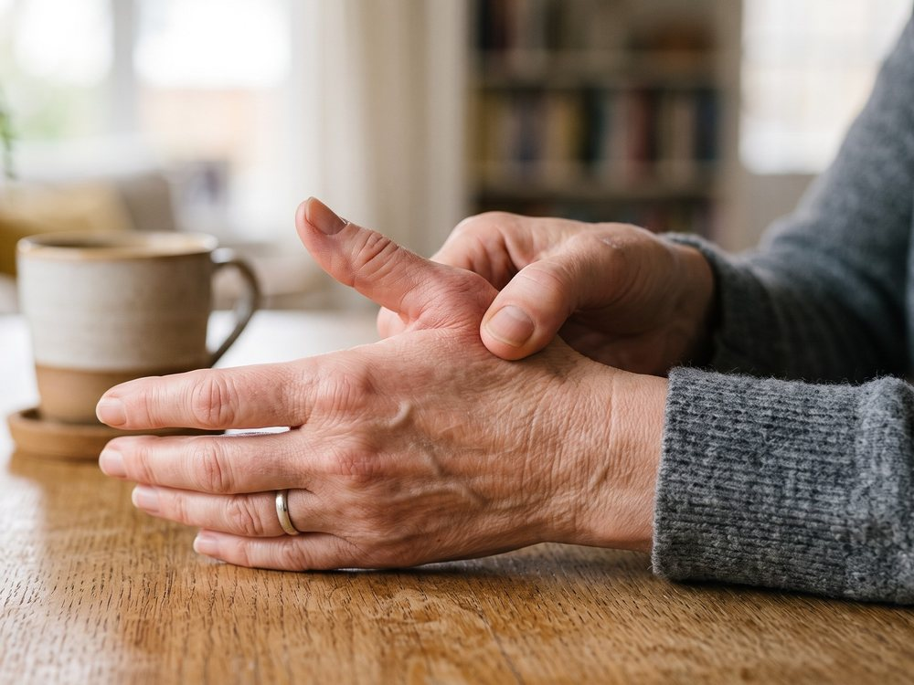
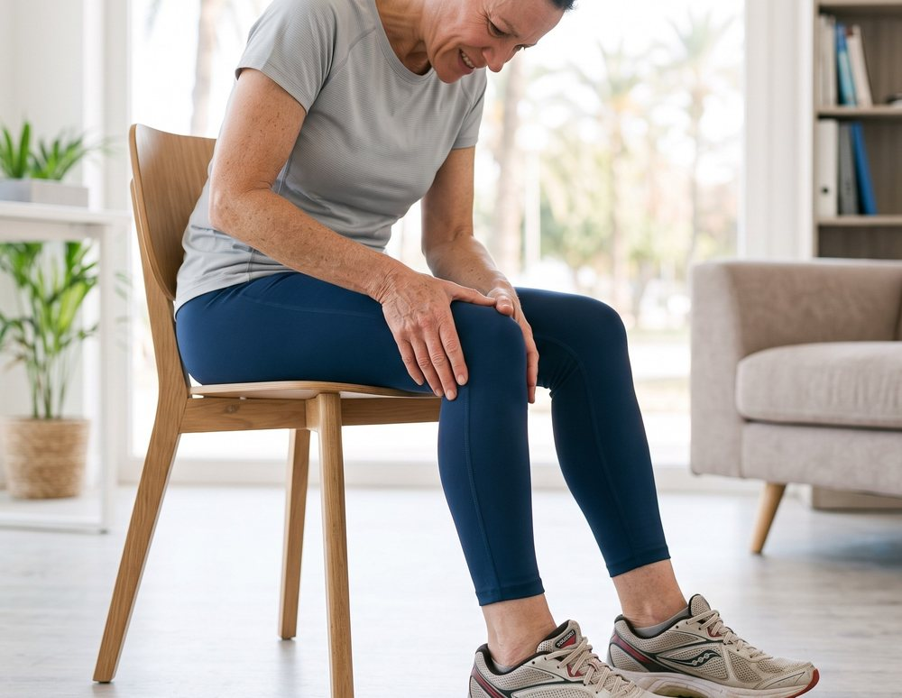

Traumatólogo especialista en infiltraciones de PRP en Murcia y Torrevieja
Tratamiento con tu propio plasma para ayudar a reducir el dolor y favorecer la recuperación en hombro, rodilla, cadera y tendinopatías. Consulta con el Dr. Javier Hernández Quinto, especialista en Traumatología y Cirugía Ortopédica, en Murcia, Torrevieja y Pilar de la Horadada.

Qué es el PRP o Plasma Rico en Plaquetas
El PRP (Plasma Rico en Plaquetas) se obtiene centrifugando una pequeña muestra de tu sangre para concentrar las plaquetas, ricas en factores de crecimiento. Es una técnica de medicina regenerativa aplicada a la traumatología, a la que popularmente también se le conoce como tratamiento con células madre. Al infiltrarlo en la articulación, tendón o ligamento afectado, se busca estimular los procesos naturales de reparación del propio tejido y reducir la inflamación local.

Tratamiento autólogo
Se utiliza tu propia sangre: sin implantes ni sustancias externas, lo que reduce el riesgo de rechazo o reacción alérgica.
Valoración individualizada
Cada indicación se plantea tras la exploración clínica y la revisión de las pruebas de imagen disponibles, evitando infiltrar cuando no existe una indicación adecuada.
Procedimiento ambulatorio
Se realiza en consulta, dura aproximadamente 30-40 minutos y no requiere ingreso ni anestesia general.
Complementario a otros tratamientos
Puede combinarse con fisioterapia y rehabilitación para optimizar el resultado funcional según cada caso.
Precio por sesión de infiltración de PRP
Precio orientativo por sesión. El número de infiltraciones necesarias se valora de forma individual en consulta.
| Ubicación | Centro | Precio por sesión | |
|---|---|---|---|
| Murcia | Hospital Mesa del Castillo | 350 € | Pedir cita |
| Torrevieja | Centro Médico Parque de las Naciones | 300 € | Pedir cita |
| Pilar de la Horadada | Clínica Virgen del Pilar | 300 € | Pedir cita |
Precio por sesión individual. En la mayoría de los casos se recomiendan entre 1 y 3 sesiones separadas por varias semanas; el plan de tratamiento se define tras la valoración clínica.
De la extracción a la infiltración, en una misma cita
Valoración clínica
Exploración física, revisión de pruebas de imagen previas y valoración de si el PRP es adecuado para tu lesión.
Extracción de sangre
Se extrae una muestra de sangre venosa, similar a una analítica convencional.
Centrifugado
La muestra se centrifuga para separar y concentrar la fracción de plasma rico en plaquetas.
Infiltración
El PRP se infiltra en la zona diana siguiendo el protocolo médico establecido, con anestesia local si es necesario.
Importante: evita los antiinflamatorios (AINEs)
Tras la infiltración de PRP no se recomienda tomar antiinflamatorios no esteroideos (como ibuprofeno, dexketoprofeno o naproxeno) durante las semanas siguientes, ya que pueden interferir con el proceso inflamatorio necesario para la regeneración del tejido. En consulta se indican las pautas concretas de analgesia si fuera necesario.
Localizaciones más frecuentes de infiltración de PRP
El PRP se emplea en múltiples articulaciones y tendones. Estas son las zonas que más habitualmente tratamos en consulta.

Hombro
Manguito rotador, tendinopatía del supraespinoso, omartrosis

Rodilla
Gonartrosis, lesiones meniscales, tendón rotuliano

Cadera
Coxartrosis, tendinopatía glútea, trocanteritis

Codo
Epicondilitis ("codo de tenista"), epitrocleítis

Tobillo y pie
Tendón de Aquiles, fascitis plantar

Muñeca y mano
Rizartrosis, tendinopatías de la mano

Artrosis
Manejo del dolor en articulaciones con desgaste degenerativo
Tendinopatías crónicas
Lesiones tendinosas de evolución prolongada, con mala respuesta a otros tratamientos
¿No ves tu lesión aquí?
El PRP se aplica en más articulaciones y tendones de los que caben en esta lista. Cuéntanos tu caso por WhatsApp y te decimos si es tu tratamiento.
Pedir cita por WhatsAppEjemplos de abordaje según patología
Estos escenarios son ilustrativos y describen abordajes habituales por tipo de lesión, no historiales de pacientes reales. Cada caso se valora de forma individual en consulta.
Gonartrosis moderada en paciente activo
Varón de 58 años con dolor mecánico de rodilla y desgaste articular moderado visible en radiografía. Se plantea un ciclo de 3 infiltraciones de PRP separadas por 3 semanas, combinado con fisioterapia de refuerzo del cuádriceps.
Tendinopatía del manguito rotador
Mujer de 45 años, dolor al elevar el brazo tras una temporada de pádel, sin respuesta suficiente a antiinflamatorios. Se propone infiltración de PRP en el tendón del supraespinoso.
Epicondilitis crónica ("codo de tenista")
Paciente de 39 años con dolor lateral de codo de más de 6 meses de evolución relacionado con esfuerzo repetitivo. El PRP se plantea tras el fracaso de reposo, férula y fisioterapia convencional.
Tendinopatía glútea con trocanteritis
Mujer de 52 años con dolor lateral de cadera al dormir de lado y subir escaleras. Se indica infiltración en la inserción de los tendones glúteos, junto con ejercicios excéntricos.
Tendinopatía aquílea en corredor
Varón de 34 años, corredor habitual, con dolor en el tercio medio del tendón de Aquiles de varios meses de evolución. Se propone PRP asociado a un plan de carga excéntrica progresiva.
Fascitis plantar resistente
Mujer de 47 años con dolor plantar matutino de más de un año, sin mejoría tras plantillas y fisioterapia. Se valora infiltración de PRP en la inserción de la fascia plantar.
Lesión meniscal degenerativa
Varón de 61 años con rotura meniscal degenerativa y deseo de evitar cirugía a corto plazo. Se plantea PRP intraarticular como parte de un manejo conservador combinado con fisioterapia.
Rizartrosis (artrosis del pulgar)
Mujer de 63 años con dolor en la base del pulgar que dificulta tareas de precisión. Se propone infiltración de PRP en la articulación trapeciometacarpiana.
Los casos anteriores son ejemplos con fines divulgativos y no sustituyen una valoración médica individual. El número de sesiones y el enfoque exacto se determinan en consulta según cada paciente.
Dudas habituales sobre el tratamiento
¿Duele la infiltración de PRP?
La extracción de sangre es equivalente a una analítica. La infiltración puede producir una molestia puntual similar a un pinchazo, y en la zona tratada es habitual notar sobrecarga o leve inflamación durante 24-48 horas.
¿Cuántas sesiones son necesarias?
Depende de la articulación y de la gravedad de la lesión. Habitualmente se plantean entre 1 y 3 infiltraciones, separadas por 2-4 semanas. Se define un plan concreto tras la valoración inicial.
¿Cuándo se empiezan a notar resultados?
La respuesta es progresiva y variable entre pacientes; muchas personas refieren mejoría del dolor en las semanas posteriores a las sesiones, aunque no se puede garantizar un resultado concreto en cada caso.
¿Tiene efectos secundarios o riesgos?
Al emplear plasma del propio paciente, el riesgo de reacción alérgica es muy bajo. Puede haber dolor, hinchazón o hematoma leve en el punto de infiltración. En la consulta se revisan tus antecedentes para descartar contraindicaciones.
¿Puedo hacer vida normal después de la infiltración?
Sí, en general no requiere baja laboral, aunque se recomienda evitar esfuerzos intensos con la zona tratada durante los primeros días, según las indicaciones que se den en consulta.
¿El PRP sustituye a la cirugía?
No en todos los casos. El PRP es una opción dentro del manejo conservador de muchas lesiones, pero la indicación de cirugía depende del diagnóstico concreto, que se valora de forma individual.
¿El PRP es lo mismo que las células madre?
No. El PRP y las terapias con células madre son técnicas de medicina regenerativa distintas: el PRP se obtiene concentrando las plaquetas de la propia sangre del paciente, mientras que las células madre se obtienen típicamente de tejido adiposo o médula ósea. Esta consulta está centrada en el tratamiento con PRP; si te interesa información sobre células madre, coméntalo en la valoración y se te orientará.
¿Cómo pido cita?
La forma más rápida es escribir por WhatsApp al 611 12 83 21, indicando la zona con molestias y la ciudad donde prefieres ser atendido (Murcia, Torrevieja o Pilar de la Horadada).
Tres ubicaciones en Murcia, Torrevieja y Pilar de la Horadada
Hospital Mesa del Castillo
Consulta de Traumatología y Cirugía Ortopédica.
Centro Médico Parque de las Naciones
Consulta de Traumatología y Cirugía Ortopédica.
Clínica Virgen del Pilar
Consulta de Traumatología y Cirugía Ortopédica.
Dr. Javier Hernández Quinto, Traumatólogo en Murcia y Torrevieja
El Dr. Javier Hernández Quinto es Facultativo Especialista Adjunto de Cirugía Ortopédica y Traumatología en el Hospital Universitario Virgen de la Arrixaca (Murcia) desde 2021, donde también se formó como especialista vía MIR con calificación de Sobresaliente (10, Positivo-Destacado). Pasa consulta de infiltraciones de PRP en Murcia (Hospital Mesa del Castillo), Torrevieja (Centro Médico Parque de las Naciones) y Pilar de la Horadada (Clínica Virgen del Pilar).
Completa su formación con un Máster Universitario en Innovación en Ciencias Biomédicas y de la Salud (Universidad de León) y un Máster en Anatomía Aplicada a la Ciencia (Universidad de Murcia), y es Profesor Colaborador Honorario de la Universidad de Murcia en la asignatura de Traumatología.
Su actividad incluye medicina deportiva —ha sido médico de equipos como El Pozo Murcia FS, UCAM Murcia o Real Murcia, y de pruebas de boxeo y atletismo— además de labor docente: es coautor de 3 libros y primer autor de 8 capítulos de libro sobre traumatología, con más de 90 comunicaciones presentadas en congresos nacionales e internacionales.
Cuéntanos qué articulación te preocupa
Escríbenos por WhatsApp indicando la zona con molestias y la ciudad donde prefieres tu consulta: Murcia, Torrevieja o Pilar de la Horadada.